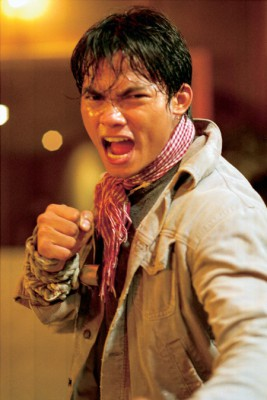
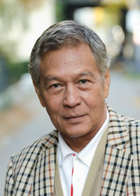

#864 Ong-bak 2


 IMDB-Wertung: 6.2 / 10
IMDB-Wertung: 6.2 / 10  Metascore: 47
Metascore: 47 
Der machtgierige Lord Rachasana entfacht einen blutigen Kampf, um Herrscher über das gesamte Königreich zu werden. Seine furchterregenden Krieger töten schließlich auch General Sidhadeco und dessen Frau. Ihr Sohn Tien muss den brutalen Mord an seinen Eltern hautnah miterleben und flüchtet in den Dschungel. Als ihn unbarmherzige Sklavenhändler entdecken, foltern und einer tödlichen Bestie opfern wollen, wird er von dem weisen Anführer Chernang befreit, der ihn fortan aufzieht. Unter dessen schützender Obhut lebend vergehen die Jahre und Tien erlernt durch hartes Training neben den Fertigkeiten der Kampfkunst auch Khon, die Kunst des siamesischen Maskentanzes. Dadurch revolutioniert er seine Technik und ist bereit für einen gnadenlosen Rachefeldzug gegen die Mörder seiner Familie.
Jahr: 2008
Dauer: 98 Minuten
FSK: 18
Land: Thailand Studio: Splendid FilmTonspuren:
Untertitel: Deutsch,
Auflösung: 1080p (1920x816) Größe: 6307 MB
Genre: Action
Regisseur: Tony Jaa, Panna Rittikrai
Drehbuch: Tony Jaa, Panna Rittikrai, Ek Iemchuen, Nontakorn Taweesuk
Soundtrack: Terdsak Janpan
Darsteller:
-  Tony Jaa als Tien
-  Nirut Sirichanya als Master Bua
 Petchtai Wongkamlao als Mhen
Petchtai Wongkamlao als Mhen- Sarunyu Wongkrachang als Rajasena Lord
- Sorapong Chatree als Chernung
- Primorata Dejudom als Pim
- Santisuk Promsiri als Nobleman Siha Decho
- Patthama Panthong als Lady Plai
- Supakorn Kitsuwon als Master Armer
- Natdanai Kongthong als Young Tien
- Prarinya Karmkeaw als Young Pim
- Jaran Ngamdee als
- Watchachai Phumiree als
- Akaradeth Rodwinit als
- Cheewin Adchariyachai als
- Sakchai Jairatsamee als
- Surachaijunthimatorn als
- Surin Suwan als
- Phillip als
- Pajon Duangkajon als
- Somdet Kaew-ler als
- Jamruen Somboon als
- Kaecha Kampakdee als
- Wirat Tanasirikajohn als
- Kazu Patrick Tang als Ninja Fighter
Datei: X:\FSK18-Eastern-Collections\Ong Bak\Ong-bak 2 (2008, FSK18, 1920x816).mkv seit 09.04.2015
Festplatte: FSK18
 Es gibt insgesamt 8 Filme in der Gruppe 'FSK18-Eastern-Collections\Ong Bak'
Es gibt insgesamt 8 Filme in der Gruppe 'FSK18-Eastern-Collections\Ong Bak'